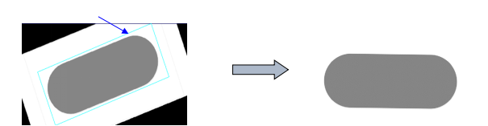
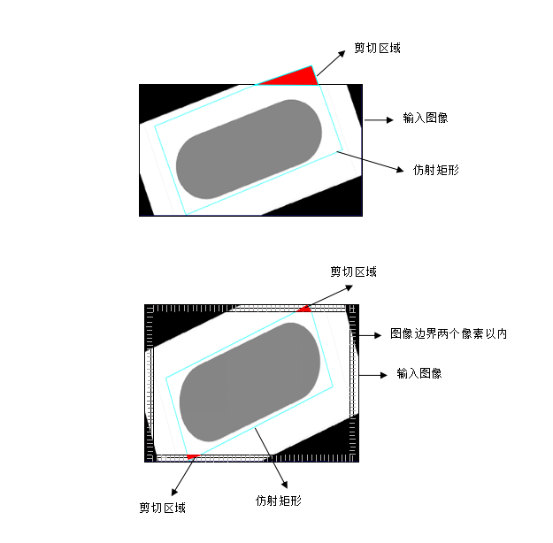

仿射采样工具主要对输入图像仿射矩形区域内的图像进行采样，输出矩形图像，以便对其进行后续处理。下图为用仿射矩形采样工具进行旋转纠正的示例。仿射矩形采样工具还可用于尺度和歪斜纠正。

| 分类 | 参数名称 | 参数描述 |
|---|---|---|
| 属性窗口 | ROI形状 | 可选择的形状整幅图像和仿射矩形。 |
| X/Y方向采样长度 | 当ROI形状选择整幅图像的时候，需要设置横纵方向的采样长度。 | |
| 仿射矩形 | 当ROI形状选择仿射矩形的时候，会显示仿射矩形的设置。 |
|
| Center（X/Y） | 仿射矩形的中心点坐标。 | |
| Size（SizeX/SizeY） | 仿射矩形的长和宽大小。 | |
| Rotation | 仿射矩形的旋转角度。 | |
| Skew | 仿射矩形的切变角度。 | |
| 多边形ROI | 当ROI形状选择多边形ROI的时候，会显示多边形ROI的设置，由于只支持4边形，所以可以看到是矩形的ROI。 | |
| VerticesNum | 顶点个数，只能为4。 | |
| Vertices | 各个顶点的坐标。 | |
| 是否彩色图 | 输入是否是彩色图像。 | |
| 图像窗口 | 输入图像 | 需要进行仿射采样的图像。 |
| 仿射矩形GUI | 用于设置仿射矩形。 | |
| 多边形ROI | 用于设置四边形。 | |
| 数据链 | 输入图像 | 需要进行仿射采样的图像。 |
| 二维线性变换 | 二维线性变换是指目标相对于模板的平移、旋转、缩放变换。二维线性变换数组是指在该工具在某一次执行完之后，所有二维线性变换所组成的数组。 | |
| 高级界面 | 无 | 无 |
| 分类 | 参数名称 | 参数描述 |
|---|---|---|
| 监视窗口 | 输入图像 | 需要进行仿射采样的图像。 |
| 输出图像 | 进行仿射采样之后的图像。 | |
| 执行结果 | 工具执行结果。 | |
| 执行时间 | 工具执行时间。 | |
| 图像窗口 | 输出图像 | 进行仿射采样之后的图像。 |
| 执行结果 | 显示工具执行结果，执行成功显示“OK”，执行失败显示“NG”，同监视窗口的执行结果参数。 | |
| 数据链 | 输入图像 | 需要进行仿射采样的图像。 |
| 输出图像 | 进行仿射采样之后的图像。 | |
| 彩色输出图像 | 进行仿射采样之后的彩色图像。 |
仿射矩形采用三顶点定义方式定义，通过定义仿射矩形的三个顶点Po、Px、Py即可确定仿射矩形，如图2所示：

根据Po - Px和Po - Py方向采样点数，可将仿射矩形划分为等面积的仿射像素，若Po - Px和Po - Py方向的采样点数分别为x_divisions和y_divisions，其即为采样结果图像的列数和行数。根据输出图像坐标(x’, y’)，可反向映射以计算其在输入图像空间的坐标(x, y)。

根据输入图像空间坐标(x, y)，可通过灰度级插值确定其灰度级。仿射采样工具中，为了保证精度和一定的效率，使用的是双线性插值方法。
在应用中，当我们用仿射矩形及其采样参数对输入图像进行采样时，规定的仿射矩形可能超出输入图像边界，称之为剪切，如图4（a）所示。当仿射矩形中仿射像素的中心在输入图像的边界两个像素之间时，也会出现剪切现象，如图4（b）所示。

对于剪切问题，采用如下解决策略：对剪切部分置零，并且返回和仿射采样图像尺寸相同的权重图像，以表示采样图像中的剪切状态，其中“0”表示剪切，“1”表示正常。如图5所示。

仿射矩形

无
参见“\Sample\仿射采样工具.gvp”。